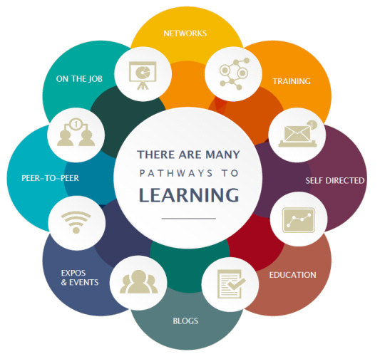
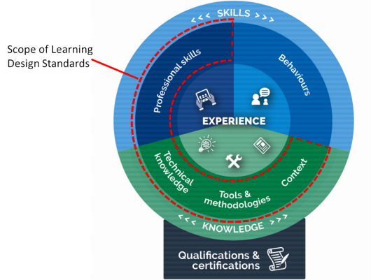

![Diagram describing the Digital Service Standard and its steps to guide teams into building efficient services. It includes: Discovery - Start mapping the broader service landscape, researching the real needs and problems faced by your users, and understanding the policy intent and technology constraints. Alpha - Test out your hypotheses by building prototypes in code to explore different ways you might be able to meet your users' needs. Explore multiple ideas. Do user research to learn which approach works best and iterate your solution as you learn more. Beta - Start building based on the minimum viable product you defined at the end of Alpha. Build this as an accessible and secure service. Allow the public to trial the beta alongside the existing service. Use their feedback to improve the service. Live - Put the team and processes in place to continue operating and improving the service. Phasing out the old services and consolidating existing non?digital channels.](images/content-design-2.jpg)
On this page
| Date | Version | Contact | Content |
|---|---|---|---|
04/05/2018 |
0.4 |
Ross McGuire |
First exposure draft |
18/05/2018 |
0.4 |
Ross McGuire |
Review and added DTA feedback (where appropriate) |
13/06/2018 |
1 |
Ross McGuire |
Exposure Draft feedback added – Phrasal changes |
18/06/2018 |
1 |
Ross McGuire |
Added – Intellectual property and moral rights |
18/06/2018 |
1 |
Ross McGuire |
Created DTA version |
The Australian Public Service Commission (APSC) has developed Learning Design Standards (LDS) to describe a capability needed by the Australian Public Service (APS) to help with the digital transformation of government services.
The LDS describes the context, business need, target audience, underpinning capabilities and curriculum for these capabilities. It does not prescribe or mandate a specific learning solution or format to build the capability described. That is left open for providers and sellers to design solutions that meet the specific needs of individual agencies.
This document is for:
All queries relating to this standard should be directed to capability@apsc.gov.au.
Intellectual property in parts of these materials may be owned by the Skills Framework for the Information Age (SFIA) Foundation.
The Australian Public Service Commission (APSC) holds an extended public sector licence on behalf of all Australian Public Service (APS) agencies covered by the Public Service Act 1999 (PS Act) for the use of SFIA materials. This licence permits certain uses of SFIA materials including the creation and internal distribution of products and services derived from or using significant extracts of SFIA materials. The licence does not extend to commercial use of the materials and does not cover Commonwealth bodies other than agencies under the PS Act.
These materials may only be used by APS agencies in accordance with the terms of the extended public sector licence granted to the APSC. No other uses of these materials are permitted. For more information on the APSC SFIA licence contact capability@apsc.gov.au.
Third-parties, including commercial entities and non-APS Commonwealth entities wishing to use these materials should contact SFIA via www.sfia-online.org
The Australian Government is modernising the way it delivers services to citizens. ‘Digital by default’ is the guiding principle. This means many APS agencies will need to engage multidisciplinary teams in the design, development and implementation of digital services as defined in the Digital Service Standard. Content design has been identified as a key skill that will be in high demand for the APS workforce to transform service delivery.
When proposing or developing a solution, it is important to be consistent with contemporary instructional design practices. Adult learning is a continuous process that is not limited to the classroom or formal training activities. Good learning design leverages the ways adults learn all the time through a range of experiences.
The diagram below shows some elements that you could include in a learning program.
Figure 1 - Pathways to learning

The APS is made up of many different departments and agencies. Each may have their own:
If your learning solution is intended for broad use across the APS you need to consider how it would apply in different contexts. Any digital solutions you develop need to be able to be deployed on a wide range of platforms.
The APS will require all digital learning solutions to be compatible with the following standards:
The APS recommend that digital learning solutions consider the following standards:
Agency requirements for assessment may vary. Formative and/or summative assessment may be offered by the provider and should be specified by the agency when engaging providers.
Formative assessment - monitors learning and gives ongoing feedback. It is used by facilitators to improve their teaching, and by learners to improve their learning. The purpose is assessment FOR learning. Examples of formative assessments are
Summative assessment - evaluates the level of success or capability at the end of a learning activity, comparing it against some standard or benchmark. The purpose is assessment OF learning. Examples of summative assessments are:
Agencies may extend, reduce or change the content of this LDS.
Agencies should highlight these changes so that providers can readily adapt their learning solutions to meet your agency needs.
The Australian Government is progressing a digital transformation agenda to revolutionise the way it delivers services. Australians are more mobile, more connected and more reliant on technology than ever before. The Digital Transformation Agency (DTA) is leading this transformation in order to improve how the Australian Government delivers services online.
As part of the digital transformation agenda, the APSC and the DTA are jointly delivering the Building Digital Capability Program. One of the main activities of this program is the identification of digital capability shortfalls and the definition of learning programs to build capability in those areas.
The Digital Transformation Agency guides government service modernisation through the Digital Service Standard (‘the Standard’). The Standard helps digital teams to build services that are simple, clear and fast.
The Digital Service Standard suggests the ideal multidisciplinary team to design, build, operate and iterate a digital service. This team includes core (permanent) roles as well as extended roles that you can bring into the team when needed. People may perform one or many roles, depending on their capability and the workload.
Figure 2 - The digital delivery team
![Diagram showing the digital delivery team. The service manager is outside the team and responsible for the digital service. Stakeholders are outside of the team. Core Team is composed of Delivery Manager, Product Manager, User Researcher, Service Designer, Interaction Designer, Content Designer, Performance Analyst, Tester, Technology Lead, Developer. The Extended Team is composed of Ethical Hacker, Web Ops Engineer, Accessibility Diversity Specialist, Business Analyst. The extended team may also include various Subject Matter Experts as required.](images/content-design-3.jpg)
The capabilities defined by the Learning Design Standards relate to the roles in a digital delivery team. An agency will be able to use the LDS to define an effective team that meets their specific agency requirements for digital transformation.
Members of multidisciplinary teams may perform many roles in their jobs. Each role has expectations of skill, behaviours and knowledge. You can verify these through relevant qualifications and certifications.
Figure 3 - Role composition

This Learning Design Standard only addresses learning outcomes for professional skills and knowledge. A person who has done training also needs to put it into practice. This allows them to gain experience and become effective. Individual agencies will determine how they manage experience.
Providers may wish to provide certifications that verify the learning outcomes specified in this LDS, but these are not mandated. It is up to individual agencies to decide if they want certification.
Individual agencies will define jobs according to their needs. Jobs may involve one role only, though it is becoming more common for multidisciplinary teams to have job fluidity. Members may perform many roles according to their capabilities and the needs of the team.
For the purposes of this learning design standard, the primary function of ‘content design’ refers to the design and creation of information for a digital service. It is user-centred, part of the service design and delivery process, and is done in an agile way.1
Content designers:
Content designers are responsible for the creation, curation, organisation, layout, evaluation, review and continuous improvement of content that’s designed around user needs. They work with user researchers, stakeholders, subject experts and multidisciplinary teams to meet user needs.
Why this role is important
Government online information and services are often essential for citizens to access and use e.g. obtain a licence, complete a tax return, etc. Government often publishes content on websites that it thinks citizens ‘must have’ rather than what people ‘need’ to know based on the tasks required. This information can be vast and unclear and can frustrates citizens who end up confused and failing to complete what they need to do. Content designers can collaborate with user researchers and/or do their own research to identify user needs. They help to create digital services that are easy to use. Effective content:
APS content designers work in multidisciplinary teams as part of the service design and delivery process. This process aligns with the DTA’s Digital Service Standard (the Standard).
APS employees in multidisciplinary teams who create content for their agency for use on digital platforms.
Therethere is no set pre-requisite academic pathway for entry into this capability, but there are qualkifications that may be of benefit. However, there are some academic pathways in relevant disciplines that may be beneficial in a government digital service delivery team.
Other multidisciplinary (service delivery) team members performing related activities to develop and improve user-centred digital services, for example;
Everybody has a different work history and career path. The following are some of the more common fields people may have come from before coming to the current role:
The following qualifications are relevant to the capability described in this LDS.
The skills, knowledge and attributes listed below are the minimum needed for someone to be effective in this role. A person undertaking the learning defined by this LDS should have the knowledge and skills described below after finishing the learning. They may need experience of these in a workplace to embed the learning and become effective.
| Knowledge: | Skills: | Attributes: |
|---|---|---|
Organisational context
Methodologies, procedures and standards
Tools
Theory/theoretical
Concepts
|
Technological
Analytical
Communication
Planning and organising
Relationships
|
Professionalism
Personal
|
The Skills Framework for the Information Age (SFIA) is a global standard that defines Digital and other ICT related skills. A person possessing the following SFIA skills at the levels indicated would be capable of performing the role described by this standard.
| Code | Skill | Applicable Levels | Caveats* |
|---|---|---|---|
Information content authoring |
3 |
- |
*Caveats are identified components of a SFIA skill that are not explicitly required for the current role. For the purpose of this Learning Design Standard the SFIA description should be read as though the caveated components were not included in the SFIA skill description.
The reference list below provides locations for sources referred to in this standard so that readers can easily locate and use them if required.
The following table outlines content areas that need to be addressed.
Unit = area of learning.
Topic = component of area of learning.
Learning objective: Explain the principles associated with good content design
| Topic title | Topic learning objectives | Critical content |
|---|---|---|
1.1 Definition of content design |
Define content design |
|
1.2 Principles of content design |
Identify the principles of successful content design |
|
1.3 Role of the capability (content design) as part of the Digital Service Standard, service design and the delivery process |
Explain how and where content design fits into service design |
|
Learning objective: To apply the processes of content design
| Topic title | Topic learning objectives | Critical content |
|---|---|---|
2.1 User needs |
Identify users and their needs |
|
2.2 Government business needs |
Recognise the user need government is trying to meet through different types of content |
|
2.3 Content research |
Identify examples of content research techniques |
|
2.4 Plan content |
Conduct required content planning |
|
2.5 Content creation |
Apply content design principles and skills to create content |
|
2.6 Content testing and iteration |
Use the content testing, improvement and iteration cycle |
|
2.7 Publishing and ongoing service management |
Apply publishing and ongoing monitoring and evaluation as part of the content lifecycle |
|
1 Government Digital Services. UK